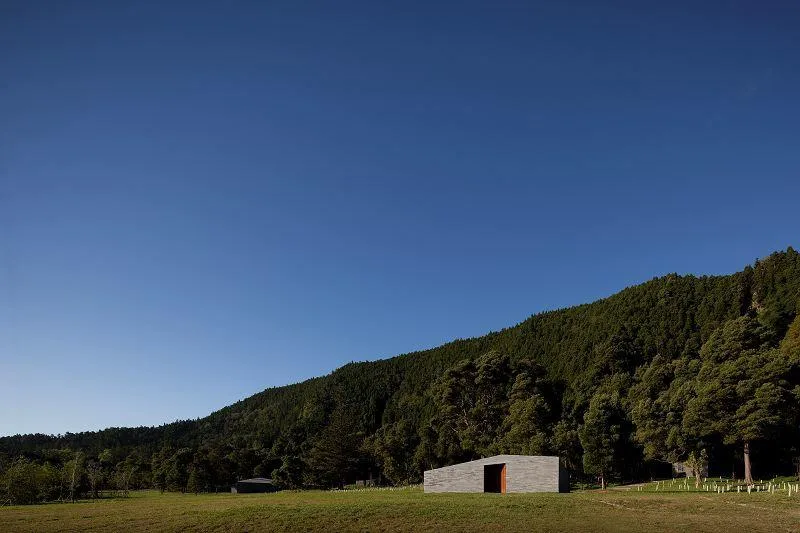
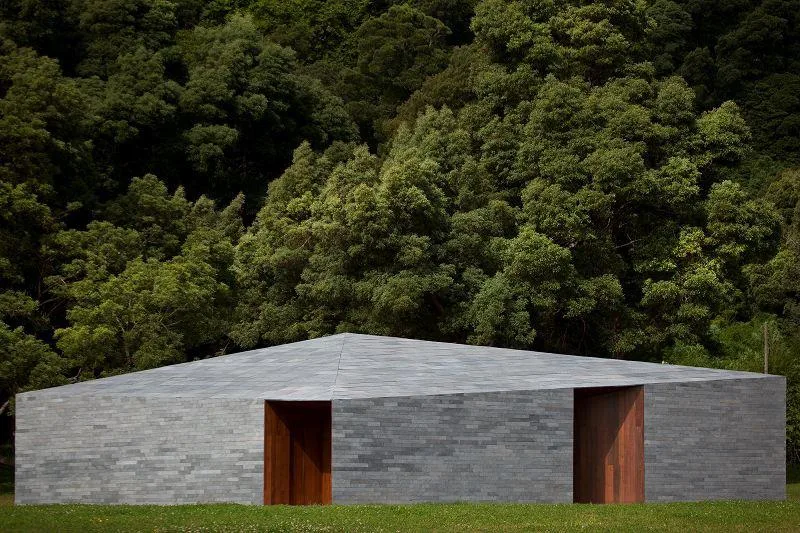
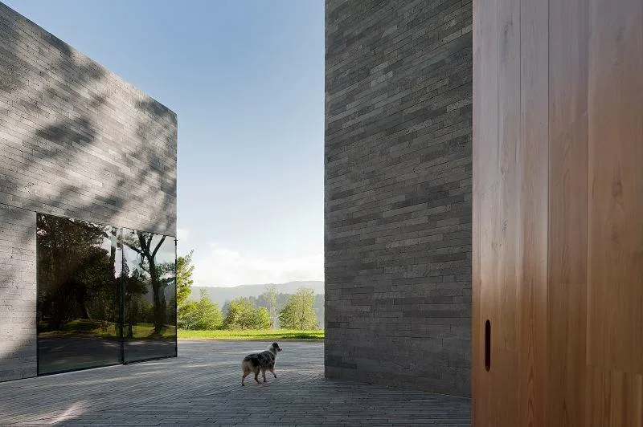
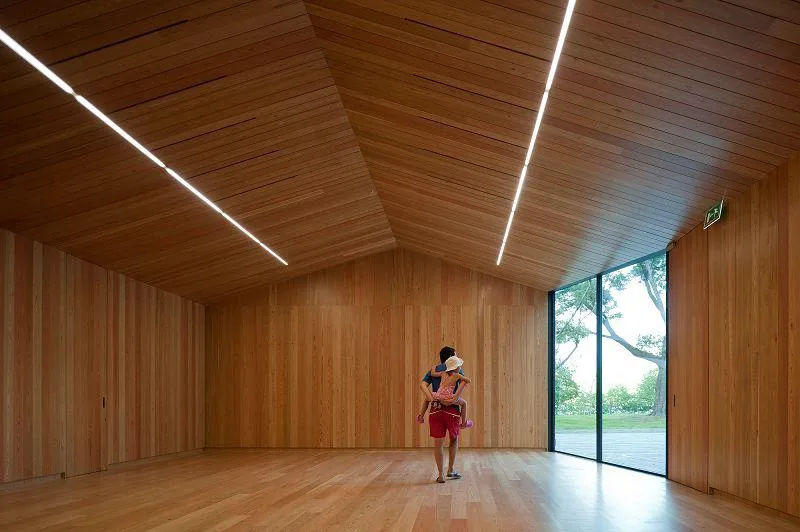
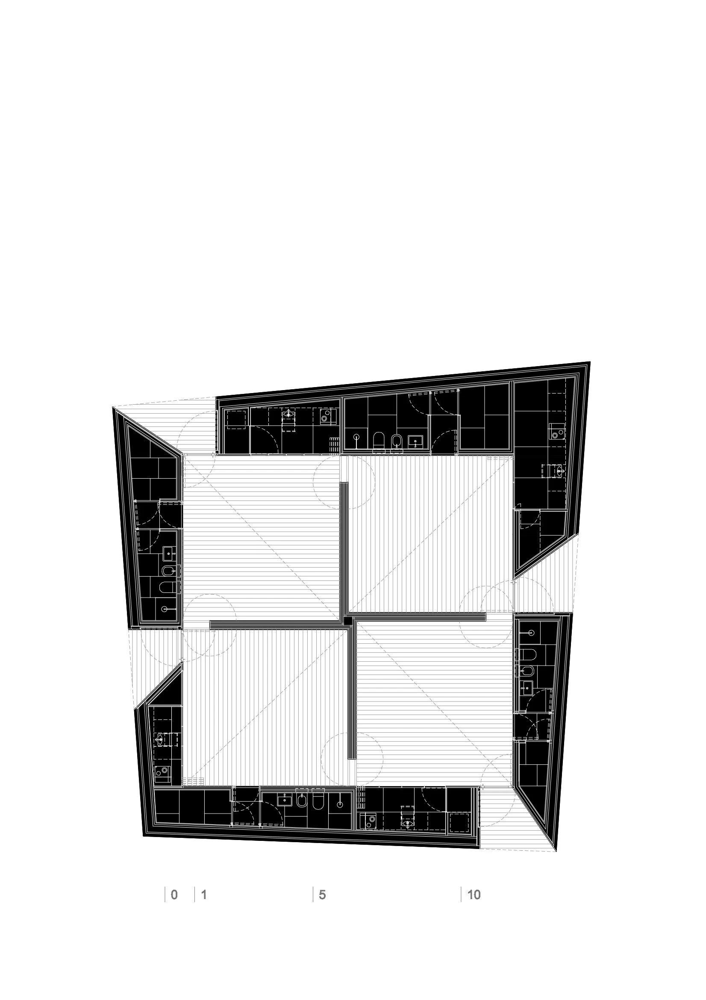
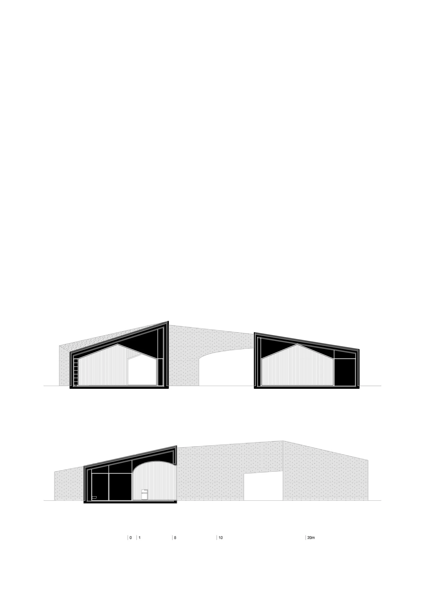

Environmental interpretation centre · 2010
Furnas Monitoring and Investigation Centre
Aires Mateus
São Miguel, Azores, Portugal
Exhibition rooms explain the lake's geology, ecology and environmental recovery. A multipurpose room supports lectures and environmental education, while the courtyard and grounds provide places to pause beside the landscape.
The architects describe the centre as a compact block cut open to admit light and views. A courtyard is subtracted from the roof and side of the volume, while local basalt links its sharply defined geometry to the material landscape of the Azores.
Azores Natural Parks — Furnas Environmental Interpretation Centre ↗


Relevant connections
THINK
Visitors learn about the lake's ecology and interpret its volcanic landscape.
SHOW
Interactive exhibitions, lectures and education activities communicate environmental knowledge.
Images and drawings / 06









